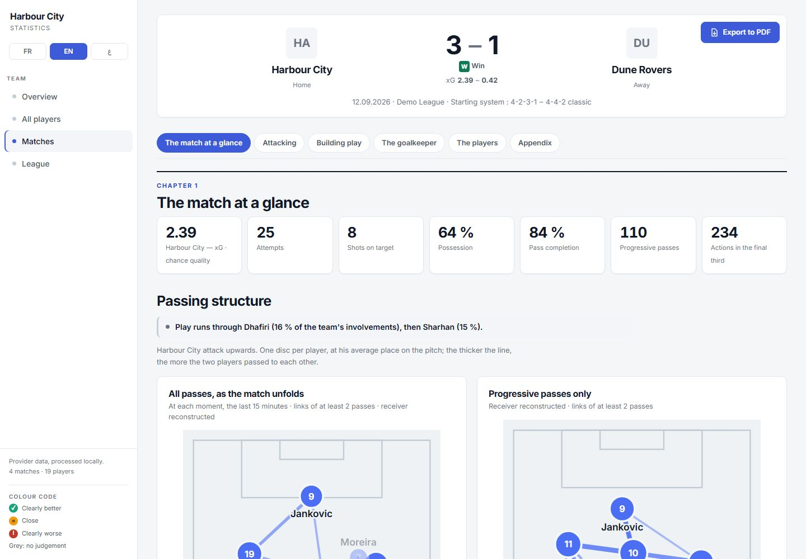
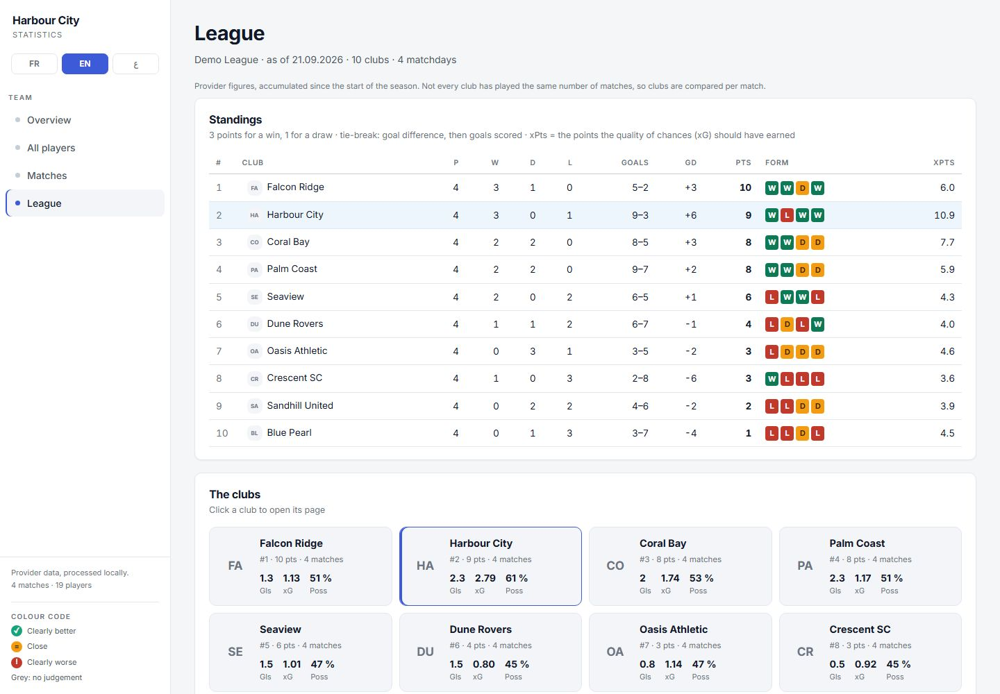
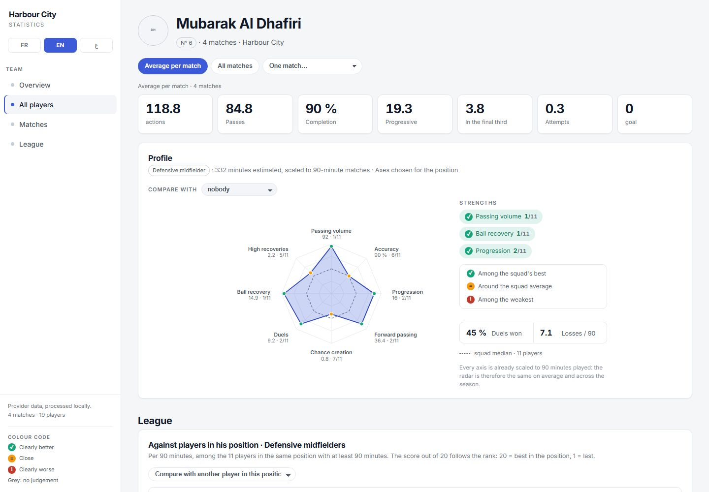

Upload. That's it.
Drop the match file and mark the two kick-offs. Kora takes it from there.
AI match analysis for football clubs
Kora watches the recording of your match, tracks every player and writes the report your staff needs — no analyst, no spreadsheet.
Kora
Most clubs outside the top leagues film every match — and never look at the footage again. Kora turns that footage into decisions.
Drop the match file and mark the two kick-offs. Kora takes it from there.
Instead of guessing, Kora shows a 3-second clip and asks one simple question. Your answer is a click.
Every answer is kept in your club profile: kit colours, pitch, camera. Next match, Kora already knows.
Every screen and every report in English, French and Arabic — with a true right-to-left layout.
How it works
The full match from the analyst camera or the TV broadcast. If the connection drops, the upload resumes where it stopped.
Players, referees and ball detected frame by frame, teams separated by kit colour, the pitch calibrated to real metres.
Where the model has a doubt, it asks. A short clip, one question — a few minutes of answers per match at most.
Team shape, block size, height of the defensive line, key moments — written for coaches, not for data scientists.
Is this a goal for your team?
Saved to your club profile. Next time, Kora will suggest it.
Under the hood
The data platform
Marmastats turns your provider's match exports into a private club website: match reports, player profiles and a comparison with the whole league.



The match at a glance, then passing structure, attacking, building play and the goalkeeper. Demo data — invented league.
Piloted with a professional club of the Kuwaiti Premier League.
Built with Claude
The whole product is built with Claude Code. Next on the roadmap: match reports written by Claude in three languages, and a club assistant that answers your staff's questions about their own matches.
We are opening Kora to new clubs. Tell us about yours.
haris.garrigos@marmastats.com